File upload
FILE · Input field for attaching documents · images to a CRF
What is a File upload field?
- 1.1Adding a field and the property panel layout
1.1Adding a field and the property panel layout
Overview
File upload (FILE) is an input field for attaching documents or images as they are, such as test reports and copies of consent forms. When added, a dashed area appears on the canvas, with the allowed formats and size limit shown as guidance. What is stored is not the file itself but the list of attached files; the actual files are kept in separate storage.
Screen guide
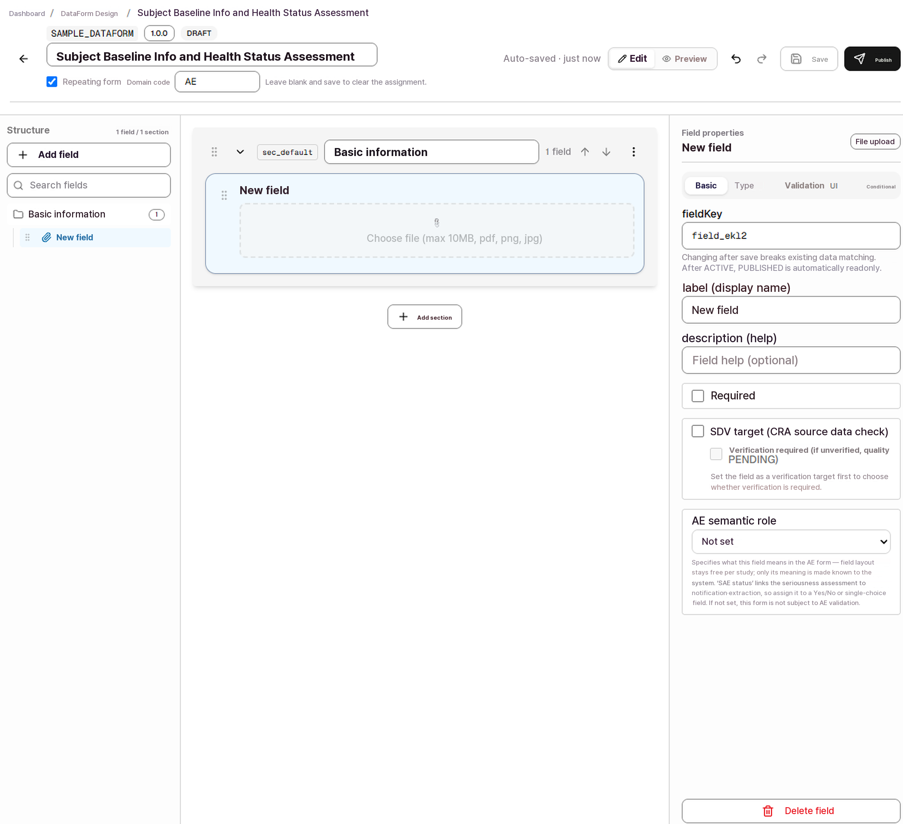
[+ Add field] — Specify the type here to create the field.
The new field is added to the structure tree. Its icon is a paper clip.
A dashed attachment area appears on the WYSIWYG canvas, with the guidance “Choose file (max 10MB, pdf, png, jpg)” inside it. Limits are shown even though you have not set any — because default constraints are applied on creation. 3.1
fieldKey — The actual key under which the value is stored. 2.1
label (display name) · description (help) — The name and supporting description shown on screen. 2.1
Required · SDV target — Covered in 2.2 · 2.3.
AE semantic role — The item that specifies the meaning of a field in an adverse event form. As the on-screen notice states, the valid targets are Yes/No or single-choice fields, so do not set it for this type.
Type badge “File upload” — The type of the selected field. It cannot be changed after the field is added.
5 property tabs — Basic · Type settings · Validation · UI · Conditional. Chapters 2–6 of this manual correspond to these tabs.
There is no “Allow not-measured declaration” item. Other types have it below AE semantic role, but for this type the system does not support not-measured declarations. If nothing is attached, the field is simply recorded as empty. (※ 7.2)
Precautions
Must check Data corruption · Form cannot be completed
- • ⛔ Make sure files do not contain subject identifiers. Test reports · reading reports often have the name · registration number · date of birth printed on them. Be sure to write in the help 2.1 and helpText 5.4 that these must be masked before attaching — the system does not check file contents.
- • The type cannot be changed after the field is added, and after publishing (PUBLISH) the structure itself cannot be changed. If you chose the wrong type, delete the field and add it again.
Easily misunderstood behavior
- • What is stored is the list of attached files. The actual files are kept in separate storage, and this field only records which files are attached. So data exports also contain that list, not the files themselves.
Basic tab — name · required · verification target
- 2.1fieldKey · display name · help
- 2.2Required
- 2.3SDV target (CRA source data check)
2.1fieldKey · display name · help
Overview
The area for setting the field's name. The storage key (fieldKey) and the name shown on screen (label) are different values, and they can be changed at different times. For File upload, the recorder cannot know what to attach unless it is explained in words, so the help is especially important.
Screen guide
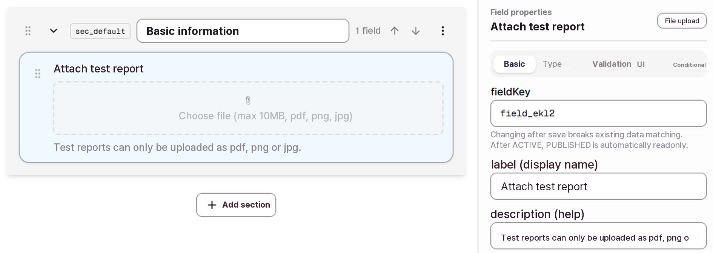
label (display name) — Enter the item name to show on the entry screen.
Shown as the title above the attachment area on the canvas.
description (help) — Enter a supporting description to show below the display name. If left blank, nothing is shown.
Shown below the attachment area. The capture shows “Test reports can only be uploaded as pdf, png or jpg.”
fieldKey — The actual key under which the value is stored. It is assigned automatically when you add the field, like field_ekl2, and as the on-screen notice says, “Changing after save breaks existing data matching”.
Precautions
Must check Data corruption · Form cannot be completed
- • Write in the help what must be attached. “Attach test report” alone does not tell which test the report is for, or whether it is the original or a copy. Describing the attachment specifically reduces attachments being returned for correction.
- • It helps to state the allowed formats in the help as well. Written as in the capture, the recorder can check before attaching — but it is the Type settings tab that actually restricts the formats. Keep the two consistent. 3.2
- • Do not change the fieldKey after saving. The link to files already attached is broken, and validation rules 4.3 and conditional display Ch. 6 that reference this field also break.
Easily misunderstood behavior
- • The display name (label) can be changed at any time. It does not affect stored values.
2.2Required
Overview
Sets whether an attachment is required to complete the form. If set as required, having no file at all is counted as not entered. Because the original is sometimes not available on site right away, decide what to do when the attachment is delayed before setting this.
Screen guide
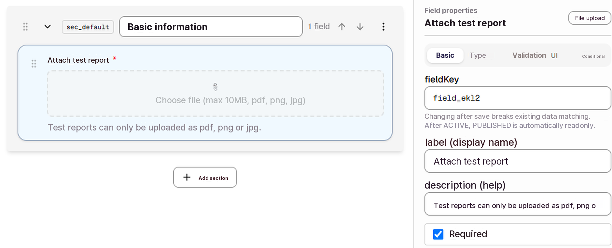
* next to the display name on the canvasRequired — When selected, this field becomes a required item.
A red * appears to the right of the display name on the canvas.
label · description — The values entered in 2.1 are shown as is.
Precautions
Must check Data corruption · Form cannot be completed
- • ⛔ This type has no way to declare “Not measured”. Other types can record “cannot be confirmed” as a value, but File upload does not support this. If you expect cases where the original can never be obtained, do not make the field required, and add a separate text field for recording the reason. (※ 7.2)
- • Hidden fields are excluded from the required check. While a field is hidden by conditional display Ch. 6, the form is completed without an attachment even if the field is required.
Easily misunderstood behavior
- • The requirement is met “if there is at least one file”. The Required setting cannot specify how many files must be attached — write the number needed in the help. 2.1 · 3.3
- • A file uploaded by mistake can be deleted. However, the deletion is also kept in the record.
2.3SDV target (CRA source data check)
Overview
SDV (Source Data Verification) is the procedure in which the clinical research associate (CRA) checks entered values against the site's source data. Here you decide whether this field is a target of that procedure. This setting is the same for all field types, so the screen is also the same regardless of type.
Screen guide


SDV target (CRA source data check) — When selected, this field is included in the CRA's check list.
When it becomes selected, the sub-item is enabled.
Verification required (if unverified, quality PENDING) — Can be set only after ① is selected. When selected, the quality status of the data stays at PENDING until the CRA finishes the check.
Before ① is selected, ② is grayed out and disabled. As the on-screen notice says, “Set the field as a verification target first to choose whether verification is required.”
Precautions
Must check Data corruption · Form cannot be completed
- • Replacing or adding a file clears the verification. The quality status returns to PENDING and the CRA must check again.
Easily misunderstood behavior
- • The attached file itself is often the source data. If a test report is uploaded as is, what the CRA checks against is already on screen, so state clearly in the help what is to be checked against what. 2.1
- • SDV cannot be performed by the person who entered the data. The system enforces cross-verification (Cross-User SoD), so the person entering and the person verifying must be different.
Note
- • The quality status progresses in the order PENDING → VERIFIED → CLEAN. If even one field marked verification required is unverified, the data cannot become CLEAN.
Type settings tab — allowed formats · size · count
- 3.1Type settings tab layout
- 3.2allowedTypes · maxSizeMB
- 3.3Multiple upload (multiple)
3.1Overall layout
Overview
File upload's type settings have three boxes — they set which formats 3.2 · how large a file 3.2 · and how many files 3.3 are accepted. Unlike other types, two boxes already contain values from the start — because default constraints are set when the field is created.
Screen guide
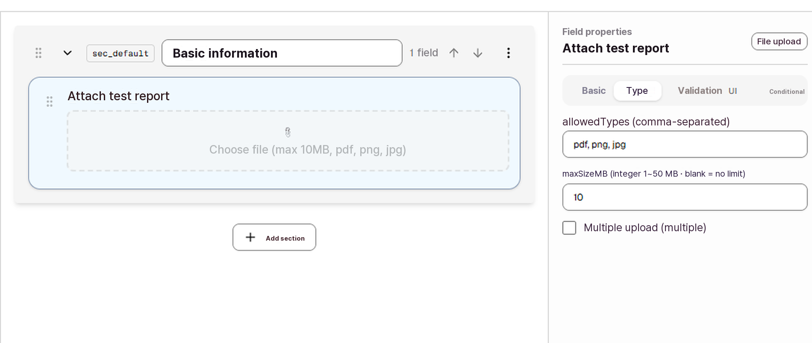
allowedTypes (comma-separated) — The file extensions to allow. Initially it contains pdf, png, jpg. 3.2
maxSizeMB — The maximum size of one file. Initially it contains 10. As the on-screen notice says, “(integer 1~50 MB · blank = no limit)”. 3.2
①–② are reflected as is in the guidance in the canvas attachment area, shown as “Choose file (max 10MB, pdf, png, jpg)”.
Multiple upload (multiple) — Sets whether several files can be attached. Initially it is off, so only one file can be attached. 3.3
Type badge “File upload” — The type of the field being set.
Property tabs — Currently the Type settings tab.
Precautions
Must check Data corruption · Form cannot be completed
- • The values in the two boxes are not hint text but constraints actually applied. In other types the grayed text is only an example, but in this type these values are set the moment the field is created — if left as is, the field operates with pdf · png · jpg and 10MB. Be sure to check that they suit the study.
- • Clearing the two boxes removes the limits. Clearing allowedTypes allows all formats, and clearing maxSizeMB removes the size limit (up to the limit the server allows). Do not clear them unless removing the limits is your intent. 3.2
Easily misunderstood behavior
- • There is no Default value (defaultValue) item. Files cannot be prefilled, so this type has no such setting.
Note
- • There is no Auto calculation item either. A file cannot be produced by a formula.
3.2allowedTypes · maxSizeMB
Overview
Sets which formats and up to what size are accepted. Both boxes are checked the moment the recorder chooses a file, so a file that does not match is rejected outright. Narrowing the limits prevents wrong files from being uploaded in the first place.
Screen guide
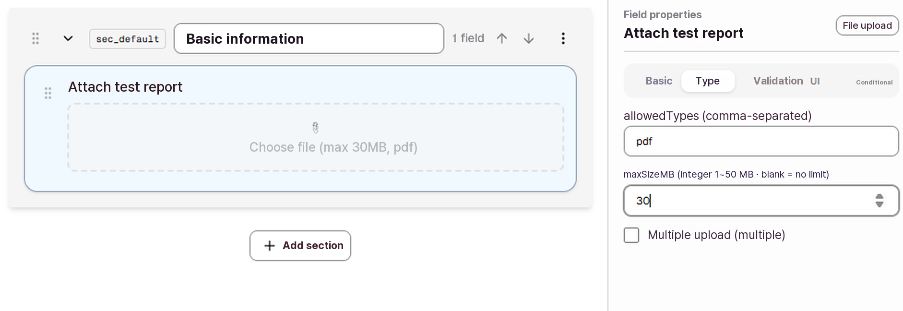
pdf · 30 immediately updates the guidance in the attachment areaallowedTypes (comma-separated) — Enter the extensions to allow, separated by commas. The capture keeps only pdf. Enter the extension only, without a dot (.).
maxSizeMB — The maximum size (MB) of one file. The capture shows 30. Only integers from 1 to 50 can be set, and values outside this range are corrected automatically.
Result of ①–② — the guidance in the attachment area changes to “Choose file (max 30MB, pdf)”.
Multiple upload (multiple) — Covered in 3.3.
Precautions
Must check Data corruption · Form cannot be completed
- • ⛔ If you narrow the limits after publishing, files already uploaded remain as they are. Only new attachments are blocked; existing files are not deleted and no warning is shown — before narrowing during operation, first check the files already attached.
- • ⛔ The size limit cannot exceed 50MB. A larger value is corrected to 50; this is the system-wide limit. For large video files, use a separate transfer procedure instead of this field.
Easily misunderstood behavior
- • The extension alone does not guarantee the content. Another file renamed to
.pdfcan also pass — content is checked by a person at the SDV stage. 2.3
Note
- • Separate extensions with commas and do not include dots. Write them like
pdf, jpg.
3.3Multiple upload (multiple)
Overview
Sets whether to accept only one file or several. When off, only one file can be attached and a new file replaces the existing one. When on, files can be added one after another — use it for material that must be received as a set, such as a report split across several pages or photos taken from several angles.
Screen guide
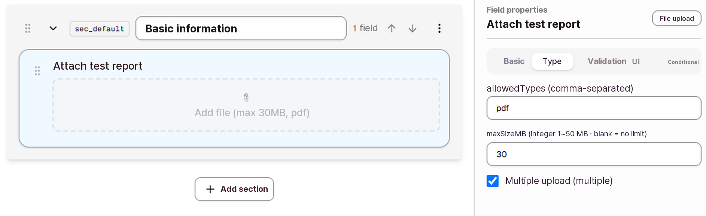
Multiple upload (multiple) — When selected, several files can be attached.
The guidance in the attachment area changes to “Add file (max 30MB, pdf)”. It differs from “Choose file” shown when off by this one word only.
allowedTypes · maxSizeMB — The values set in 3.2. The size limit applies per file and is independent of the number of files.
Precautions
Must check Data corruption · Form cannot be completed
- • ⛔ When off, a new file replaces the existing file. If the recorder attaches again intending to add a file, the previously uploaded file is replaced — if several files must be received, be sure to turn it on.
- • ⛔ The maximum number of files cannot be set. When on, files accumulate without limit, so state the number needed in the help and helpText. 2.1 · 5.4
- • Be careful when turning it off after it has been on. If you turn off multiple for a field that already has several attachments, later attachments switch to replacement, which causes confusion.
Easily misunderstood behavior
- • The size limit is per file. With 30MB set and multiple turned on, several 30MB files can be uploaded. 3.2
Validation tab — checking values before saving
- 4.1No validation rules
- 4.2Adding a rule
- 4.3Completed rule — Compare with another field
4.1No validation rules
Overview
The tab that collects rules checking whether values meet conditions before saving. File upload already blocks formats and sizes in the Type settings tab, so there is little to check separately in this tab — use it only to check relationships with other fields. 4.3
Screen guide
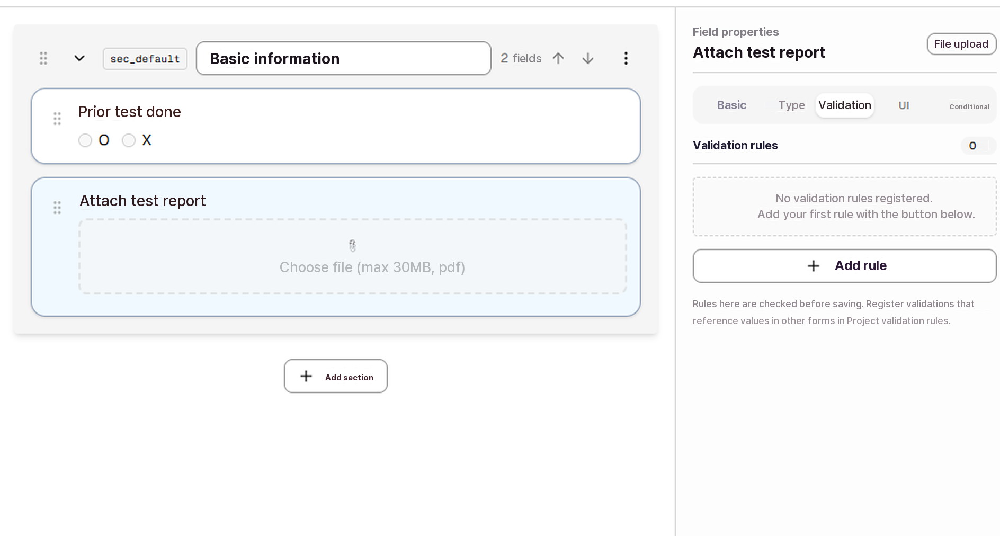
[+ Add rule] — Creates the first rule. The screen after selecting it is explained in 4.2.
The Validation rules area and the number of registered rules. Initially it is 0 items.
When there are no rules, the notice “No validation rules registered. Add your first rule with the button below.” is shown.
Notice at the bottom — “Rules here are checked before saving. Register validations that reference values in other forms in Project validation rules.”
Precautions
Must check Data corruption · Form cannot be completed
- • ⛔ Validations that reference values in other forms cannot be created here. Register such rules on the “Project validation rules” screen.
- • The Validation tab is not restricted by type. Rules that do not suit files can also be chosen, so you must check yourself whether the chosen rule works for this type. 4.2
Easily misunderstood behavior
- • Format · size limits are set not here but in the Type settings tab. Attachments are already blocked there, so there is no need to duplicate the same limits as rules. 3.2
- • The capture has two fields: “Prior test done” (single choice) and “Attach test report” — whether attaching is allowed depends on the answer to the first field, so 4.3 creates a rule that links the two fields.
4.2Adding a rule
Overview
Selecting [+ Add rule] in 4.1 creates a Rule 1 block. Initially “Value range” is set, but it does not apply because files cannot be compared as greater or smaller — you must change it to “Compare with another field”. 4.3
Screen guide
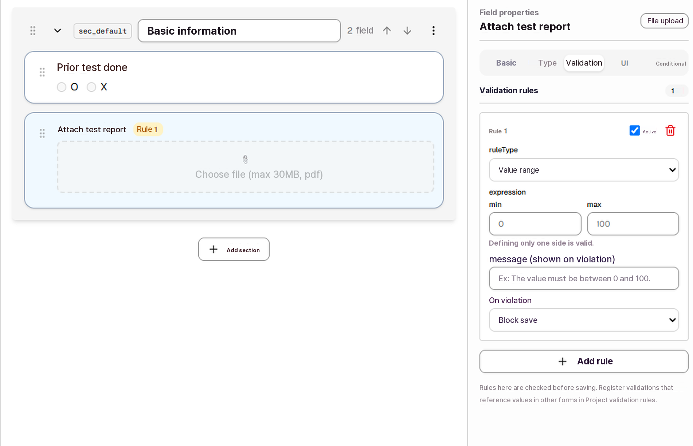
[+ Add rule] — Creates one more rule. (It is the same button you selected in 4.1.)
A “Rule 1” badge appears next to the display name on the canvas.
The number of rules changes to 1 item.
Active checkbox and Delete icon — You can pause a rule without deleting it.
ruleType — The kind of rule. Right after creation it is “Value range”, so change it to “Compare with another field”.
min — The lower-limit box that appears when Value range is chosen.
max — The upper-limit box that appears under the same condition.
message (shown on violation) — The message shown to users when the rule is violated.
On violation — Select either Block save or Warning. (Depending on ruleType, it may not be selectable — 4.3)
The faint 0 · 100 and “Defining only one side is valid.” are guidance for Value range, not set values.
Precautions
Must check Data corruption · Form cannot be completed
- • ⛔ Do not mistake “Value range” for a file count or size limit. This rule checks numeric values, so it blocks nothing in File upload. The size limit is handled by maxSizeMB 3.2 and the count by multiple upload 3.3.
- • ⛔ Do not use “Format (regex)” either. Allowed extensions are handled by allowedTypes. Applying a regex can reject correctly attached files. 3.2
- • If message is left blank, users cannot tell why saving was blocked. Be sure to enter it.
Easily misunderstood behavior
- • The useful rule for this type is “Compare with another field”. It checks relationships such as “a file can be attached only when a specific answer was given to the previous question”. 4.3
4.3Completed rule — Compare with another field
Overview
Changing ruleType to Compare with another field checks the value against the value of another field in the same form. It is the only rule type actually usable in File upload, and can express a relationship in which whether attaching is allowed depends on the answer to a previous question.
Screen guide
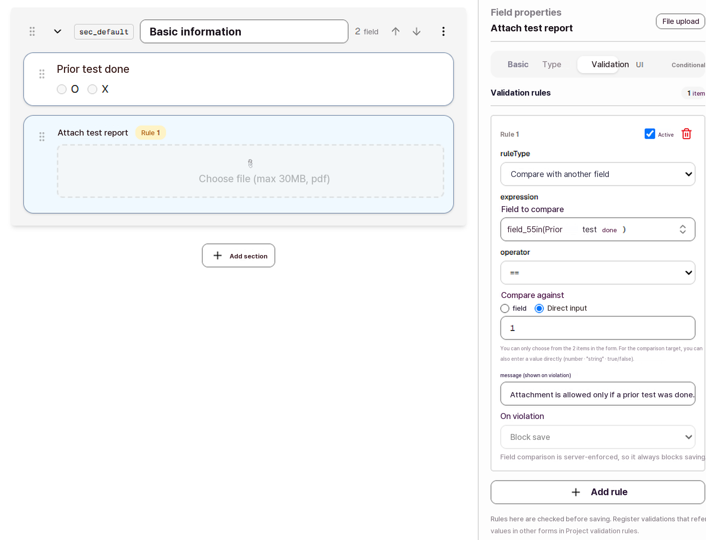
1ruleType = Compare with another field — When selected, the boxes below change for comparison.
Field to compare — Select another field in the same form. The capture uses field_55in(Prior test done), a single-choice field.
operator — The comparison method. The capture shows == (equals).
Compare against — Select either Field or Direct input. The capture uses direct input with 1 — the stored value of “Prior test done”.
message (shown on violation) — The capture shows Attachment is allowed only if a prior test was done.
On violation — Grayed out and disabled. As the on-screen notice says, “Compare with another field is server-enforced, so it always blocks saving.” — for this rule, Warning cannot be chosen and it is fixed to Block save.
On-screen notice — “You can only choose from the 2 items in the form. For the comparison target, you can also enter a value directly (number · "string" · true/false).”
Precautions
Must check Data corruption · Form cannot be completed
- • ⛔ For the comparison target, enter the stored value, not the text shown on screen. “Prior test done” in the capture appears as
O·Xon screen, but its stored value is1. First check the stored value in the option list of the referenced field. - • ⛔ Check the direction of the condition before publishing. A validation rule is written as the condition that must be satisfied. After setting it, check the actual behavior in Preview.
Easily misunderstood behavior
- • This rule cannot be set to a warning. On violation is fixed to Block save, so use it only for relationships that must be blocked.
- • If nothing is attached, the rule is not checked. An empty field is not subject to the check; preventing a missing attachment is the job of Required 2.2.
UI tab — screen layout and guidance text
- 5.1UI tab layout
- 5.2Layout width
- 5.3Read-only · hidden
- 5.4helpText (help)
5.1Overall layout
Overview
The tab that sets how the field is laid out and guided on screen, not the value itself. Settings in this tab do not change the stored data itself. However, Hidden only hides the field on screen while attached files remain, so check 5.3 before using it.
Screen guide
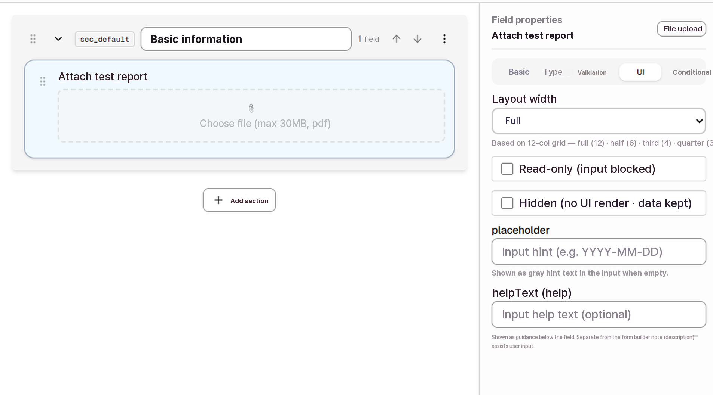
Layout width — The width this field takes up in one row of the form. 5.2
Read-only (input blocked) — Shows the field but blocks attaching · deleting. 5.3
Hidden (no UI render · data kept) — Hides the field from the screen. 5.3
helpText (help) — The guidance text shown below the attachment area. 5.4
placeholder — The item is shown, but it does not apply to this type. The guidance text in the attachment area is assembled by the system from the Type settings tab values (“Choose file (max 10MB, pdf, png, jpg)”), so it cannot be changed here. 3.1 · 5.4
Type badge “File upload”
Precautions
Must check Data corruption · Form cannot be completed
- • Text entered in placeholder does not appear on screen. No error or warning is shown, so the guidance you wrote silently disappears — write guidance in helpText. 5.4
Easily misunderstood behavior
- • To change the guidance text in the attachment area, edit the Type settings tab. Changing the allowed formats and size changes that text accordingly. 3.2
- • Settings in this tab do not change stored files. Only the layout and guidance change.
Note
- • Do not use Read-only and Hidden together. Hidden takes precedence, so the Read-only setting has no effect. 5.3
5.2Layout width
Overview
Sets the width this field takes in one row of the form. In File upload the whole attachment area shrinks, so narrowing the width can cut off the guidance text or the names of attached files.
Screen guide
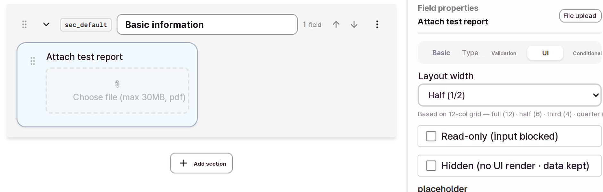
Layout width — Select from Full · Half (1/2) · 1/3 · 1/4.
On the canvas, the attachment area narrows as well. Other fields are placed in the remaining space in the same row.
Based on 12-col grid — As the on-screen notice says, “full (12) · half (6) · third (4) · quarter (3)”.
Precautions
Must check Data corruption · Form cannot be completed
- • ⛔ Do not narrow it to 1/3 · 1/4. The guidance text in the attachment area is long (“Choose file (max 30MB, pdf)”), so it gets cut off and becomes unreadable. If you must narrow it, go no further than Half.
- • Do not narrow a field with multiple upload turned on. Attached files pile up as a list, and if the width is narrow the file names are cut off, so you cannot check what was uploaded. 3.3
Easily misunderstood behavior
- • Full width is recommended. The attachment area is an element that takes a lot of space by nature.
Note
- • If not set, full width is applied.
5.3Read-only · hidden
Overview
Settings that show the field but prevent changes, or hide it from the screen while keeping attached files. Neither deletes files already uploaded.
Screen guide
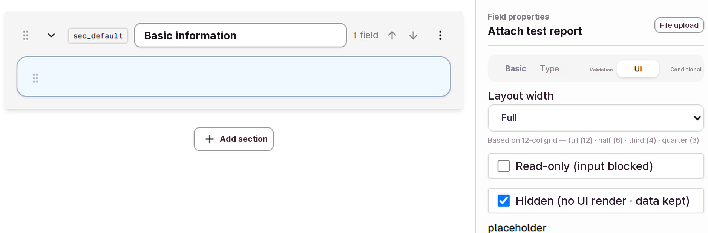
Read-only (input blocked) — When selected, attached files can be viewed but cannot be newly uploaded or deleted.
Hidden (no UI render · data kept) — When selected, this field is not shown on the entry screen.
Only an empty border remains of the canvas card. Neither the display name nor the attachment area is shown.
Layout width — The value set in 5.2.
Precautions
Must check Data corruption · Form cannot be completed
- • ⛔ Hidden does not delete attached files. Files already uploaded remain in storage and are included in exports and the audit trail. If you use Hidden to hide a file uploaded by mistake, the file stays and only disappears from the screen — delete it on the entry screen.
- • ⛔ Do not handle files containing personal information with Hidden. If a report with identifiers printed on it was uploaded by mistake, the file must be deleted, not hidden. 1.1
Easily misunderstood behavior
- • Use Read-only for material whose submission is complete. It is suited to locking attachments that must not change any more.
- • To hide the field depending on a condition, use conditional display. Hidden in this tab always hides the field. Ch. 6
5.4helpText (help)
Overview
The place to write text that tells the recorder what to attach and how. In File upload, the format · size · count limits are spread across different tabs, so for the recorder this text is the only place to see them all at once. In the same tab, placeholder does not apply to this type.
Screen guide
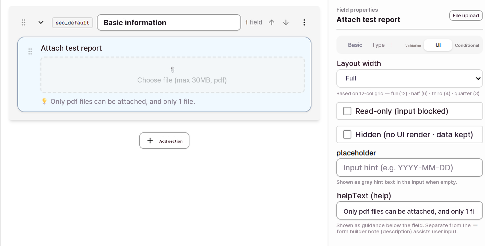
helpText (help) — Enter the guidance text to show below the attachment area.
Shown below the attachment area along with the 💡 icon. The capture shows “Only pdf files can be attached, and only 1 file.”
placeholder — It does not apply to this type. Text entered does not appear on screen, and no error is shown. 5.1
Type badge “File upload”
Precautions
Must check Data corruption · Form cannot be completed
- • ⛔ Do not write guidance in placeholder. In this type it does not appear on screen, so what you wrote silently disappears.
- • ⛔ Be sure to state that identifiers must be masked before attaching. This guidance is the only way to prevent material with names · registration numbers printed on it from being uploaded as is. 1.1
- • Restate the limits in plain words. Stating the format · count together, as in the capture, lets the recorder check before attaching. If you change the limits, this text must be updated too. 3.2 · 3.3
Easily misunderstood behavior
- • description and helpText are different items. As the on-screen notice says, helpText is “Separate from the form builder note (description) — assists user input”. 2.1
Conditional tab — showing a field based on another value
- 6.1Enabling conditional display
- 6.2Setting the condition
6.1Enabling conditional display
Overview
A feature that shows or hides this field depending on the value of another field. It is especially well suited to File upload — not showing the attachment area at all to subjects it does not apply to prevents unnecessary material from being uploaded.
Screen guide
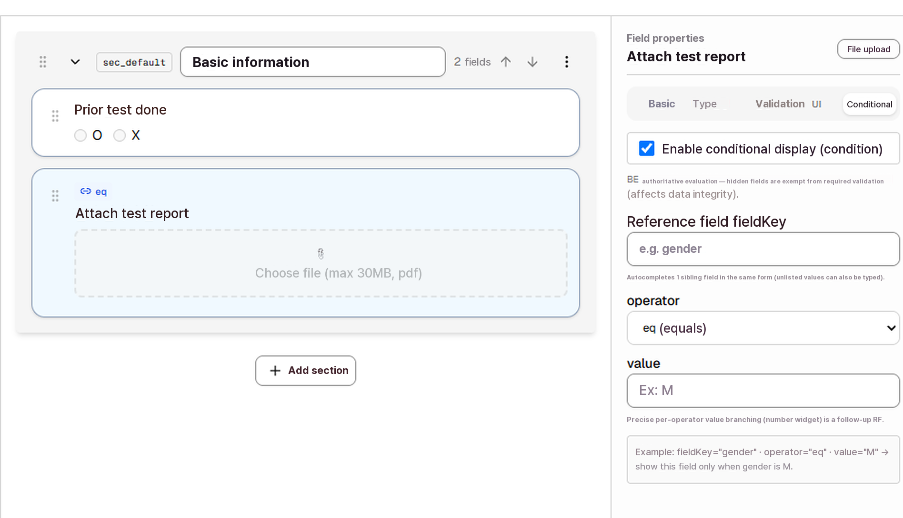
Enable conditional display (condition) — When selected, the condition settings below appear.
A 🔗 eq badge appears above the field on the canvas to show that a condition is applied.
Reference field fieldKey — Another field in the same form on which the condition is based. Sibling fields in the same form are autocompleted, and you can also type a value not in the list.
operator — The comparison method. The default is eq (equals).
value — The value to compare. Enter the stored value of the reference field. 6.2
⚠ On-screen notice — “Hidden fields are exempt from required validation (affects data integrity).” The condition is evaluated by the system.
Example at the bottom — fieldKey="gender" · operator="eq" · value="M" → show this field only when gender is M.
Precautions
Must check Data corruption · Form cannot be completed
- • ⛔ Setting a condition exempts the field from required validation. While it is hidden because the condition is not met, the form is completed without an attachment even if the field is required. So if the condition is wrong, material goes missing without any error.
- • ⛔ If the condition becomes false after a file has been attached, the attachment area disappears from the screen. The file itself remains in storage, but the recorder can no longer view or delete it — be especially careful when changing the field the condition is based on later.
Easily misunderstood behavior
- • Consider conditional display before validation rules 4.3. If people it does not apply to are never asked, nothing can be attached by mistake.
Note
- • If you enable the condition and leave the reference field blank, the condition is never met. Be sure to fill in all of ②–④. 6.2
6.2Setting the condition
Overview
The state after entering the condition enabled in 6.1 completely. With this setting, the attachment area is shown on the entry screen only when the value of the “Prior test done” field is 1. The reference field is single choice, so its stored value is a string, and entering that value as is in the value box makes the condition work correctly.
Screen guide
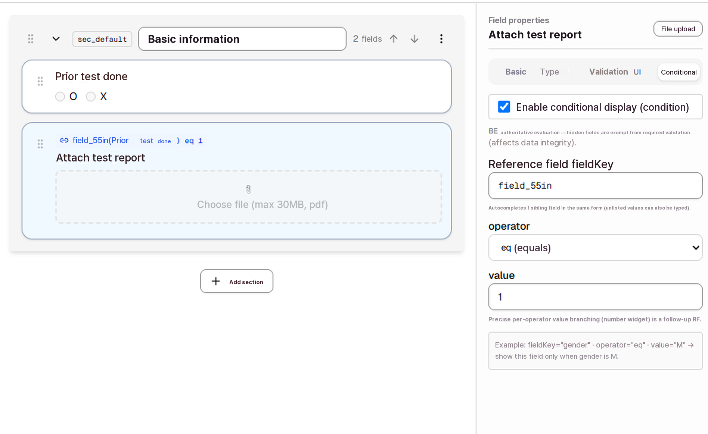
Prior test done is 1Reference field fieldKey = field_55in — Points to the “Prior test done” field in the same form.
Result of entering all of ①–③ — the canvas badge becomes specific: 🔗 field_55in(Prior test done) eq 1.
operator = eq (equals)
value = 1 — Enter the stored value of the option, not the O shown on screen.
⚠ On-screen notice — “Hidden fields are exempt from required validation (affects data integrity).”
Example at the bottom — fieldKey="gender" · operator="eq" · value="M" → show this field only when gender is M.
Precautions
Must check Data corruption · Form cannot be completed
- • ⛔ For value, enter the stored value, not the text on screen. If you enter
O, the condition is never met and the attachment area is never shown. First check the stored value in the option list of the referenced field. - • ⛔ Changing the stored value of the reference field silently breaks the condition. For example, if you change the stored value from
1toY, this condition simply stops being met without any error — which is why changing stored values after publishing is risky. - • Changing or deleting the fieldKey of the referenced field also breaks the condition. Conditions are linked by fieldKey, not by display name. 2.1
Easily misunderstood behavior
- • After setting it, check in Preview. Change the reference value back and forth to confirm that the attachment area actually appears and disappears.
Appendix
- 7.1Settings by tab at a glance
- 7.2Must remember · not covered
7.1Settings by tab at a glance
Settings by tab
| Tab | Item | What it sets | Section |
|---|---|---|---|
| Basic | fieldKey | The actual key under which the value is stored (do not change after saving) | 2.1 |
| label (display name) | Item name shown on screen | 2.1 | |
| description (help) | Supporting description below the attachment area — what to attach | 2.1 | |
| Required | Whether at least one file is required (no not-measured declaration) | 2.2 | |
| SDV target | Whether it is a CRA source data check target · whether verification is required | 2.3 | |
| AE semantic role | This type is not a valid target — for Yes/No · single choice | 1.1 | |
| Type settings | allowedTypes | Allowed extensions (comma-separated · pdf, png, jpg on creation) | 3.1 · 3.2 |
| maxSizeMB | Maximum size of one file (integer 1~50 · 10 on creation) | 3.1 · 3.2 | |
| Multiple upload (multiple) | Allow several attachments — when off, a new file replaces the existing file | 3.3 | |
| Validation | ruleType | Kind of rule — the only one usable in this type is Compare with another field | 4.2 · 4.3 |
| Field to compare · operator · Compare against | Condition compared with another field in the same form (compared by stored value) | 4.3 | |
| message | Message shown to users on violation | 4.3 | |
| On violation · Active | Compare with another field is fixed to Block save · rule active · inactive | 4.3 | |
| UI | Layout width | Width on the 12-col grid (Half at most · Full if multiple) | 5.2 |
| Read-only | Shows attached files but prevents uploading or deleting | 5.3 | |
| Hidden | Not shown on screen (attached files remain in storage) | 5.3 | |
| helpText | Guidance on how to attach (placeholder does not apply to this type) | 5.4 | |
| Conditional | Condition active | Whether conditional display is used (exempt from required validation) | 6.1 |
| Reference field fieldKey | Field in the same form on which the condition is based | 6.2 | |
| operator · value | Comparison method and value to compare (enter the stored value) | 6.2 |
Differences from other types
| Item | Other types | File upload |
|---|---|---|
| Initial type settings | Start with empty boxes | Default constraints are already set as values 3.1 |
| Allow not-measured declaration | Item present in the Basic tab | The item itself does not exist 2.2 · 7.2 |
| Default value (defaultValue) | Present in the Type settings tab | None — files cannot be prefilled 3.1 |
| placeholder | Shown as hint text in the input box | Does not apply — the system assembles the guidance 5.4 |
7.2Must remember · not covered
Must remember
Must check Data corruption · Form cannot be completed
- • Have subject identifiers in files masked before attaching. The system does not check file contents — the only way to prevent this is the guidance in the help and helpText. 1.1 · 2.1 · 5.4
- •
pdf, png, jpg·10MBright after creation are constraints already applied. They are not examples, so be sure to check that they suit the study. 3.1 - • With multiple upload off, a new file replaces the existing file. If several files must be received, be sure to turn it on. 3.3
- • Even if you narrow the limits after publishing, files already uploaded remain. Only new attachments are blocked, and no warning is shown. 3.2
- • Hidden does not delete attached files. A file uploaded by mistake must be deleted on the entry screen, not hidden. 5.3
- • This type has no way to declare “Not measured”. If the original may never be obtained, do not make the field required, and add a text field for recording the reason. 2.2
Easily misunderstood behavior
- • What is stored is the list of attached files. The actual files are kept in separate storage together with an integrity check. 1.1
- • Format · size are handled by the Type settings tab, not the Validation tab. “Value range” checks neither the file count nor the size. 3.2 · 4.2
- • The size limit is per file and cannot exceed 50MB. 3.2
Note
- • For the same relationship, conditional display comes before validation rules — if you do not ask, nothing can be attached by mistake. 4.3 · 6.1
Not covered in this document
※ Allow not-measured declaration — The item is not shown in the Basic tab. This is because the system does not support not-measured declarations for this type, not because the capture is missing it. If nothing is attached, the field is recorded as simply empty. 2.2
placeholder — The item is shown in the UI tab but does not apply to this type. The guidance text in the attachment area is assembled by the system from the Type settings tab values. Write guidance in helpText. 5.1 · 5.4
Default value (defaultValue) · Auto calculation (calculation) — There are no such items in the Type settings tab. Files cannot be prefilled or produced by a formula. 3.1
AE semantic role — The item exists in the Basic tab, but this type is not a valid target. Assign it to Yes/No or single-choice fields. 1.1
Screens for uploading and deleting files — This document covers only the form authoring side. For the procedures by which the recorder actually attaches · deletes · downloads files, see the entry screen manual.
Maximum number of attachments — There is no item for setting it. Use the help and helpText to state the number needed. 3.3